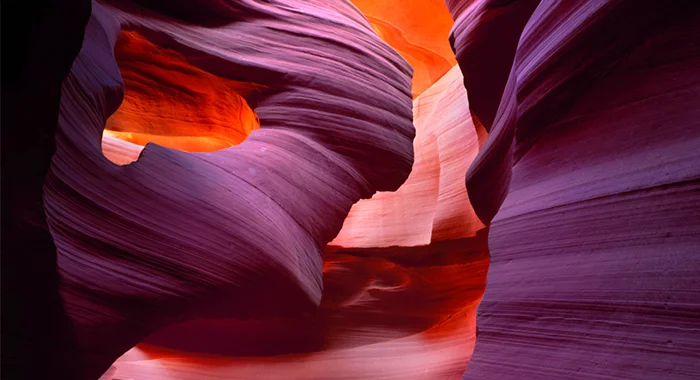

De todas as cavernas que você viu até agora, somente nas Batu é permitida a circulação de visitantes. Trata-se de um conjunto de inúmeras cavernas, sendo que na principal delas, conhecida como Catedral, fica uma imponente estátua do deus hindu Murugan, a qual atrai inúmeros visitantes todos os anos. Rica em calcário, a formação abriga pedras com mais de 400 milhões de anos de idade geológica.